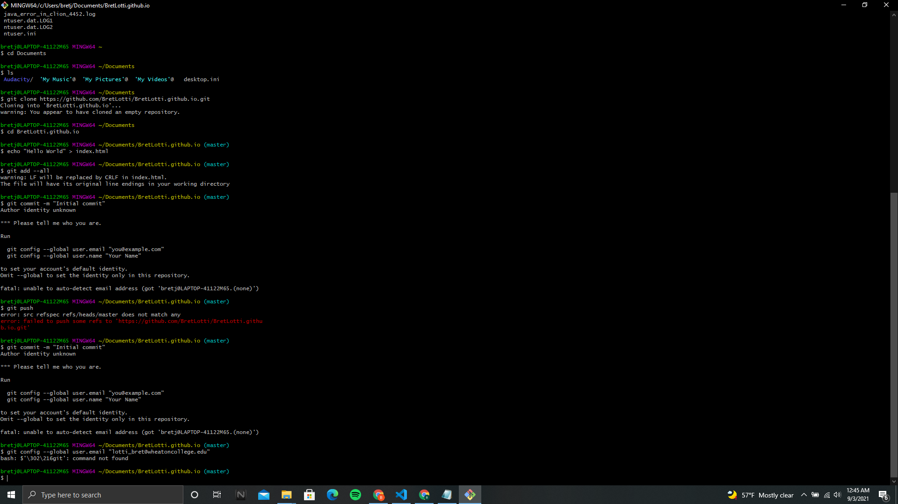
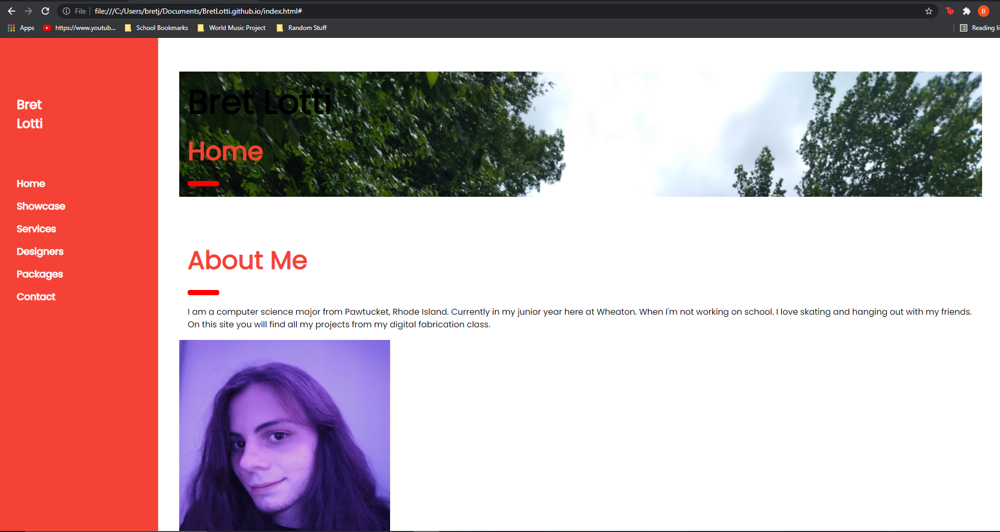

The first step of this project was setting up a Gitup Acount and Gitbash. Now, I have a windows computer, so I ran into some strange issues with the gitbash terminal being unable to idenfity me. Which is not something I've seen with the MAC users I have talked too. This issue required me to go into my powershell and push my email and user name through there. After that, setting up the site was as easy as following the video on the class website.
After that I went looking for a website template. After some browwsing, I found a template I really like called "Interior Design" that a side bar function that I really liked. Thus the basis for my site is that template I have edited much of to really make it my own. The hardest part of this process was setting my site up in a way that was well formatted and was appealing to look at/navigate.
I then ran into an issue when trying to push my site through. Every image on the site worked fine, except for one. The site seemed to understand an image was there, but could not load it for whatever reason. The issue didn't seem to be with my code, so I am unsure what was actually causing it. However, when I went back into Visual studio to make changes and pushed them through. The image started working.

I made some more formatting changes and made buttons to make it easier to navigate. I would have liked to not have so much dead space and in future edits. I will better fill the space. I feel like I've learned so much about HTML in such a short amount of time and it was fun watching my site slowly come together.